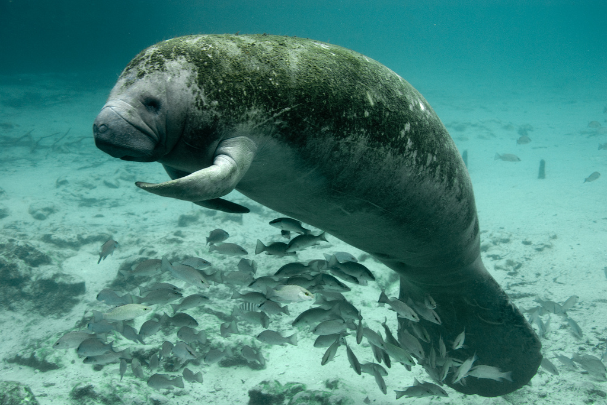
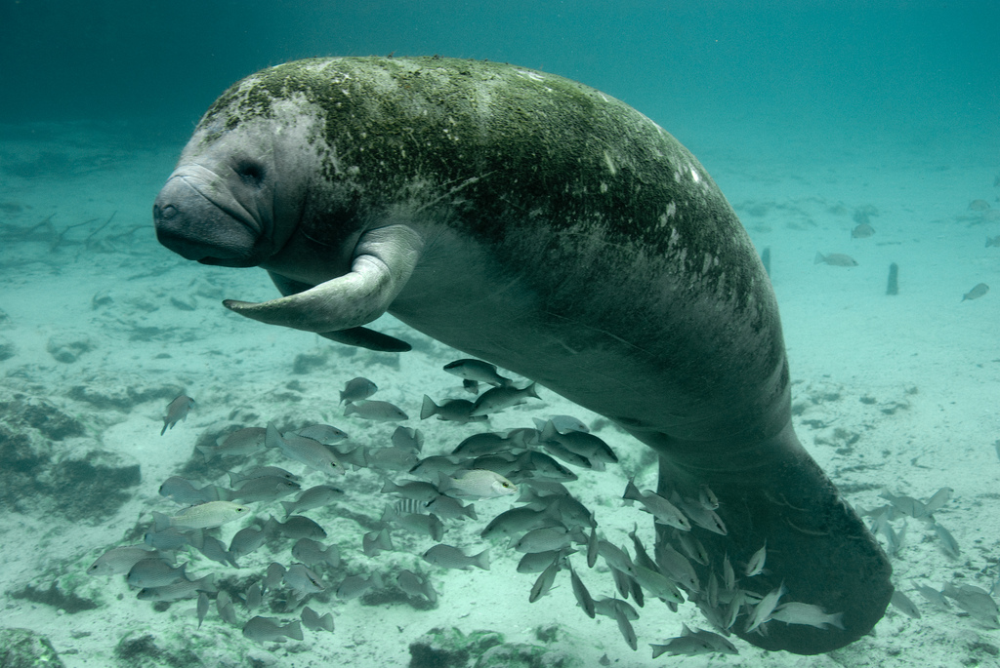

animales en peligro de extinción en chiapas y sus características. El lobo mexicano es una subespecie del lobo gris (Canis lupus) que siempre se enfrentó a la persecución humana por considerarse un peligro para el ganado. Los animales en peligro de extinción son la consecuencia inmediata de las actividades del hombre.

Palenque es una zona que se encuentra rodeada de una gran diversidad de otros habitats, tales como cercas vivas
 
